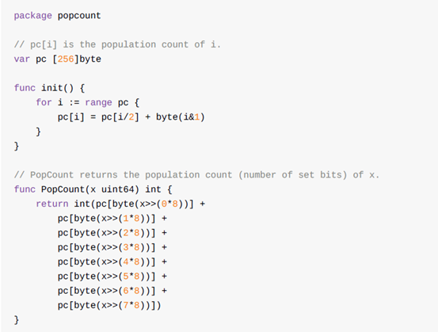
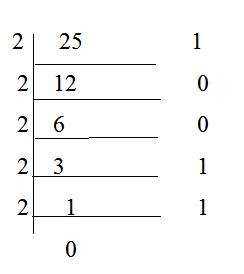

统计二进制1的代码解读
Contents
为了适应边缘计算的需求决定投入学习Go语言的浪潮，用了10年的java突然要去接受一个风格完全不一样的语言感觉真是太刺激了。 在看《Go语言圣经》的时候看到里面的一个计算二进制中1的个数的程序popcount，觉得挺有意思就拿出来分享一下吧。
程序代码总计也没几行，可以说很一目了然了：
程序分为两个部分，
- 初始化构造一个长度为256的数组
- 主程序PopCount通过8次右移操作分别求低8位的1数量然后相加
那这么明显的结构，这么清晰的代码有啥好解读呢？主要原因是在第一遍看的时候产生了两个疑问，我觉得有必要记录一下解决疑惑的过程。
初始化数组为什么是256
这个问题需要和PopCount主程序结合看。
因为在主程序中使用的算法是将64位的无符号整数切割成8个8位，而8位的无符号整数取值范围是0-255，为了完整表示这256个数值的1的位数，所以使用了长度为256的数组。
初始化算法的依据是什么
其实初始化的算法就一句话 pc[i] = pc[i/2] + byte(i&1)，一句话就得出了整数中二进制1的个数字典表也太神奇了吧。怎么来理解这个算法呢？经验？定理？当然可以选择记住就行。
但是我们还是可以尝试着大声的念出这段代码的含义，
整数 i 中1的个数等于整数 i/2 中1的个数加上i在低1位的1的个数
是不是有点灵感了？直接上图吧
从图中可以看出每个整数i的1的个数由两部分组成
- i/2的1的个数，这部分就对应算法中的pc[i/2]
- i/2的余数，这部分对应算法中的byte[i&1]
到这里这段代码的疑惑就全部解开了，嗯就是这么Go！